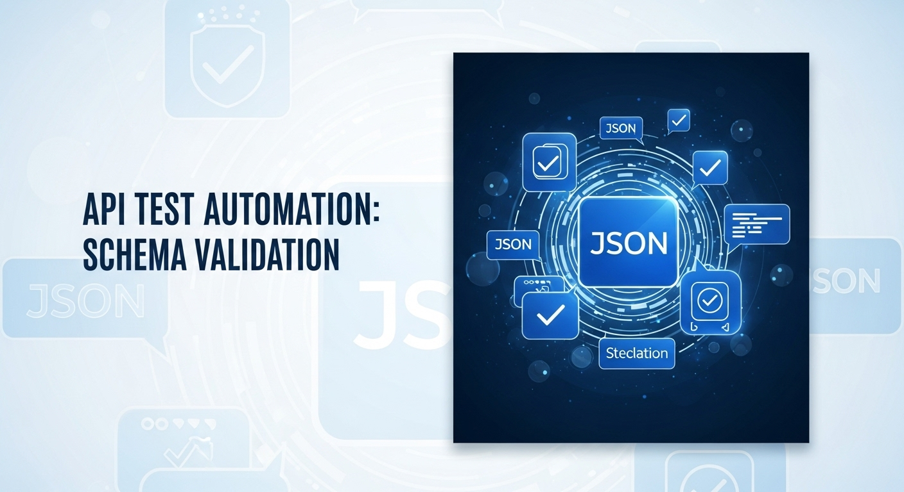

Tüm Blog Yazılarım

Test Projelerinde Veri Yönetimi
Test otomasyon projelerinde kritik rol oynayan veri yönetimi stratejileri ve deneyimlerim.
Devamını Oku
Test Otomasyonunda Konfigürasyon Yönetimi
Test Otomasyonunda Konfigürasyon Yönetimi: Ortam Bağımlılıklarını ve Kırılganlığı Azaltmak
Devamını Oku

API Test Otomasyonunda Şema Validasyonu
API Test Otomasyonunda Şema Validasyonu: Sadece Durum Kodlarına Güvenmeyin!
Devamını Oku